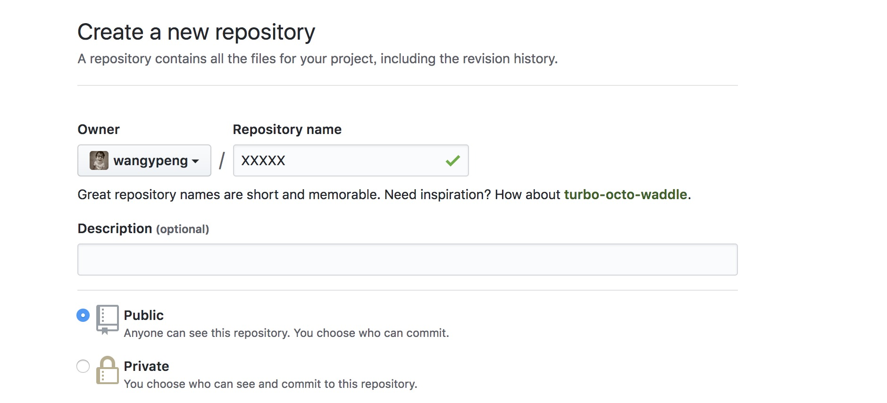
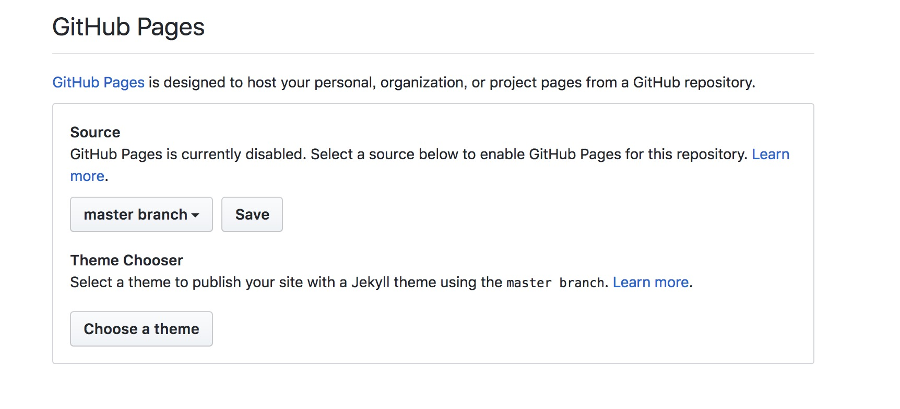
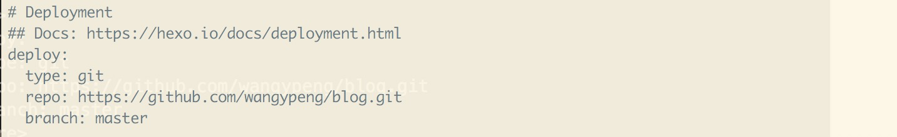

选择github和hexo搭建blog的原因
这是我自己搭建的第一个blog,现在比较流行的有wordpess、github blog。wordpress 通过了解构建比较发杂，所以选择了使用github blog 搭建，使用的是md语法，部署直接使用的是github服务器，也不需要单独搭建服务器。wordpress我不是太了解，大神勿喷。
个人想法：现在做技术，其实在学校上学的时候是有些是时候有很多相似的地方，有些的地方有意思的地方就整理下，善于记录、积累:
一，能把这些好想法也好，思路也好，都能记录下来，以便于日后能用到
二，书写文章对思路也是一个很好的锻炼，就好像“茶壶里煮饺子”，饺子好了一定要倒出来，才算掌握，一个新的技术只有能清晰的讲解出来，也才算真正的理解
三，以后在面试的时候也能也可以在简历上，把自己的github、个人站点、blog写上，也会让你在面试中加分
我也开始上路，把自己的blog刚刚弄好了，就写了这篇文章，md，之前写wiki用过，github写过简单的README.md，但是没有用md来写文章，可能文章格式不好看的地方，大神勿喷
环境准备
git
我感觉，要是做开发的同学本地一定会装git的，git主要拉取github项目，和github上项目关联。
常用的命令也不说了，日常开发中也会经常用到。
node
再有一个环境就是node环境，这个主要是hexo这个工具依赖node环境，node的环境的要求，这个我也
太清楚，我的本地的node version : v8.11.1，之前开发用的6.x的版本，现在不做node开发，换的高一点版本。6.x+ 肯定是够用的。没问题。
hexo
hexo 这是blog主要使用的工具，步骤如下：
- 安装命令
npm i -g hexo - 进入目录
cd /xx/xx - 执行初始化
hexo init
解释下生成的目录
- node_modules：是依赖包
- public：存放的是生成的页面
- scaffolds：命令生成文章等的模板
- source：用命令创建的各种文章
- themes：主题
- _config.yml：整个博客的配置
- db.json：source解析所得到的
- package.json：项目所需模块项目的配置信息
创建blog project
首先创建github项目。
设置项目为blog，保存
设置hexo信息，设置你的git地址，分支。
开始小试牛刀
hexo cleanhexo ghexo s
hexo g 是生成对应的文件，也就是把md编写的md文件，生成对应的html文件，可以让服务运行hexo s 是启动hexo 服务，执行该命令会看到
INFO Hexo is running at http://localhost:4000/blog/. Press Ctrl+C to stop.
也就是说hexo服务已经起来了。可以通过http://localhost:4000/blog/ 这个url访问。也可以通过-p命令指定端口号。hexo deploy 这个是部署github 服务的命令，就是讲本地的代码push到服务器上，其实也就是一个静态页面，推送上去。使用这个命令，在公网上使用你刚刚在github中设置pages的那块的url访问你的blog。这样别人就能看到了。
hexo new ‘my first blog’ 可以使用new 这个参数创建md 文件，会直接生成头信息。用md编辑器编辑，再推送到服务器上就ok了。
样式问题
其实搞blog，有种当年玩qq空间的感觉，可以到网站去找自己的喜欢的样式，去设置，我也刚刚开始，也没有做的很好看，所以这块就不分享了。站长统计及搜索引擎
统计留言：可以集成第三的统计插件，在自己的blog里的_config.yml 文件中设置。
搜索引擎：可以在百度的站长工具中设置，自己要被爬的链接，把自己的blog url 贴进去，过几天百度爬过了就可以通过百度搜索自己的blog了。自己的文章也可以在百度中搜到了。域名问题
可以自己备案一个域名，在github中blog的项目设置中，pages那块会有个域名设置，这样。github
会这个域名解析到你的blog项目下，这样就可以使用自己的域名访问了。是不是很爽呐。
总结
我这个只是刚刚开始，也算是小试牛刀，文章中提到的好多细节，我都没有深入去搞，我下面，我会写一些技术的文章，在写作的过程中，有深入的细节，我也会更新到这个文账中。
Blog源码地址： https://github.com/wangypeng/blog-source